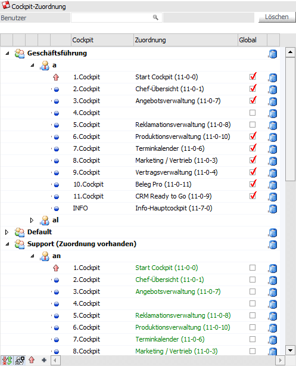
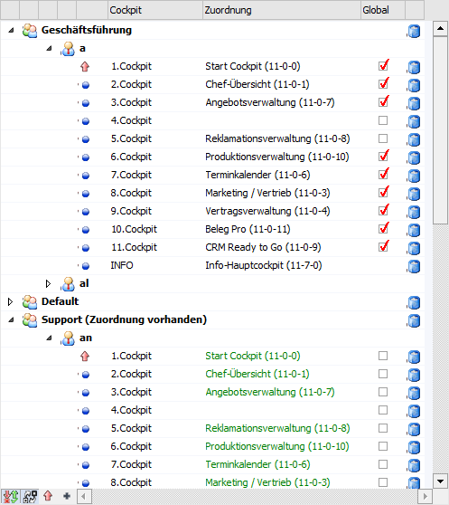
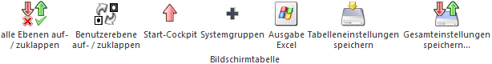

In der Tabelle "Cockpit-Zuordnung" können die Cockpits den Benutzern oder den Benutzergruppen zugewiesen werden. Hierbei stehen 11 Zuordnungsplätze (1. Cockpit bis 11. Cockpit) pro Benutzer zur Verfügung.
Hinweis
Der Zuordnungsplatz "INFO" steht nur für die Funktion "Start-Cockpit" zur Verfügung.

Die Zuweisung kann hierbei über unterschiedliche Wege erfolgen:
ü Drag & Drop eines Cockpits aus der Tabelle "verfügbare Cockpits" oder der Tabelle "Standard Cockpits" auf einen Zuordnungsplatz
ü Die Zuordnung gilt generell nur für den aktuellen Mandanten (Ausnahme siehe Spalte "Global")
ü Für den Zuordnungsplatz "INFO" kann keine Zuordnung erfolgen, da der Platz nur zur Definition des Start-Cockpits dient
ü Die zugeordneten Cockpits werden in schwarz dargestellt
ü Drag & Drop eines Benutzers auf einen anderen Benutzer
ü Die Zuordnung gilt generell nur für den aktuellen Mandanten (Ausnahme siehe Spalte "Global")
ü Die Option "Start-Cockpit" wird nicht kopiert, da die Zuweisung individuell pro Benutzer erfolgt
ü Für den Zuordnungsplatz "INFO" kann keine Zuordnung erfolgen, da der Platz nur zur Definition des Start-Cockpits dient
ü Die zugeordneten Cockpits werden in schwarz dargestellt
ü Drag & Drop eines Benutzers auf eine Benutzergruppe
ü Die Zuordnung gilt generell nur für den aktuellen Mandanten
ü Bei einer Benutzergruppenzuordnung werden alle Zuordnungen für die Benutzer der Gruppe gelöscht
ü Die zugeordneten Cockpits werden in grün dargestellt
ü Anwahl des Buttons "Cockpit-Zuordnung kopieren"
ü Über das Programm kann bestimmt werden, für welche Mandanten die Zuordnung gelten soll
ü Die Art der Zuordnung (Benutzergruppen- oder Benutzerzuordnung) kann definiert werden
Hinweis
Wird eine Cockpit-Zuordnung durchgeführt und weist das Zielobjekt keine Objektberechtigungen für das Cockpit auf, so wird automatisch ein Lese-Recht vergeben. Dieses passiert hingegen nicht, wenn im Cockpit ein Objektberechtigungsschema zugeordnet wurde.
Achtung
Welche Zuweisungen vorgenommen werden dürfen, ist vom eingeloggten Benutzer abhängig:
ü WinLine Benutzer des Typs
"Administrator" oder mit der Administratorenberechtigung
"Datenadministration"
Es werden in der Tabelle "Cockpit-Zuordnung" alle
Benutzergruppen und alle WinLine Benutzer angezeigt. In weiterer Folge können
alle Zuweisungsvarianten genutzt werden.
ü Normaler WinLine Benutzer
In
der Tabelle "Cockpit-Zuordnung" wird die eigene Benutzergruppe und der eigene
Benutzer angezeigt. In weiterer Folge können Cockpits aus den Tabellen
"verfügbare Cockpits" und "Standard Cockpits" auf einen Zuordnungsplatz
geschoben oder der Button "Cockpit-Zuordnung kopieren" genutzt werden.
Benutzer
Ø Benutzer
An dieser Stelle können Voll- bzw. Datenadministrator eine Einschränkung auf einen bestimmten Benutzer vornehmen. Im Standard wird das Feld mit dem aktuellen Benutzer vorbelegt.
Ø Löschen
Durch Anwahl dieses Buttons können Benutzer des Typs "Administrator" oder mit der Administratorenberechtigung "Datenadministration" die Eingabe unter "Benutzer" entfernen.
Tabelle

Ø Spalte "Benutzergruppe"
In der ersten Spalte werden die Benutzergruppen angezeigt. Mit Hilfe der Icons bzw. können die Benutzer der Gruppe ein- bzw. ausgeblendet werden. Wurde die statische Anzeige der Systemgruppen aktiviert, so werden die Icons bzw. dargestellt (nähere Informationen siehe Tabellenbutton "Systemgruppen").
Hinweis
Sollte eine Benutzergruppenzuordnung vorhanden sein, dann wird hinter dem Namen der Gruppe der Zusatz "(Zuordnung vorhanden)" dargestellt.
Ø Spalte "Benutzer"
Unterhalb der Benutzergruppen werden die Benutzer einer Gruppe angezeigt. Mit Hilfe des Symbols bzw. können die Zuordnungsplatze des Benutzers ein- bzw. ausgeblendet werden.
Ø Spalte "Start-Cockpit"
An dieser Stelle wird in Form eines Symbols dargestellt, ob es sich um das Start-Cockpit handelt. Dieses wird beim Programmstart automatisch angezeigt.
Definiert werden kann ein Start-Cockpit per Doppelklick auf das Symbol oder mit Hilfe des Tabellenbuttons "Start-Cockpit".
ü - Kein Start-Cockpit
Es handelt sich bei
dem Cockpit nicht um das Start-Cockpit.
ü - Start-Cockpit
Es handelt sich um das
Start-Cockpit, welches beim Programmstart automatisch angezeigt wird.
Ø Spalte "Zuordnung"
In dieser Spalte wird das Cockpit angezeigt, welches zugeordnet wurde. Zur besseren Orientierung wird hinter dem Cockpitnamen die Cockpitnummer angezeigt. Des Weiteren werden in der Zeile "Info" die Cockpits der WinLine INFO als zusätzliche Information dargestellt (via DropDown-Auswahl).
Hinweis
Die Cockpitnummer (z.B. "11-0-2") setzt sich wie folgt zusammen:
ü 11 -Nummer des WinLine Benutzers, welcher das Cockpit ursprünglich erstellt hatte
ü 0 - Applikationsnummer, für welche das Cockpit erstellt wurde (0 = WinLine START / 10000 und mehr = CRM Cockpit)
ü 2 - fortlaufende Nummer pro Benutzer
Ø Farbgebung
Mit Hilfe der folgenden Farbgebung werden die unterschiedlichen Zuordnungs-Varianten dargestellt:
ü - Benutzerzuordnung
ü - nicht gespeicherte Benutzerzuordnung
ü - Benutzergruppenzuordnung
Ø Spalte "Global"
Grundsätzlich gelten alle in der Tabelle getätigten Cockpit-Zuordnungen für den aktuellen Mandanten. Mit Hilfe der Option "Global" kann definiert werden, dass diese Zuordnung für alle Mandanten gelten soll.
Achtung
Sollten Zuordnungen für den Zuordnungsplatz in anderen Mandanten vorhanden sein (für den entsprechenden Benutzer), dann werden diese Zuordnungen automatisch überschrieben.
Ø Spalte "Löschen"
Mit Hilfe des Symbols können Cockpit-Zuordnungen gelöscht werden.
Tabellenbuttons

Ø alle Ebenen auf- / zuklappen
Die Ebenen "Benutzergruppe" und "Benutzer" wird auf- bzw. zugeklappt.
Ø Benutzerebene auf- / zuklappen
Die Ebene "Benutzer" wird auf- bzw. zugeklappt.
Ø Start-Cockpit
Der selektierte Cockpiteintrag wird als Start-Cockpit definiert, wodurch es beim Start der WinLine automatisch angezeigt wird.
Hinweis
Wurde der Bereich "INFO" als Start-Cockpit definiert, dann wird bei Programmstart automatisch in die WinLine INFO gewechselt.
Ø Systemgruppen
Durch Anwahl dieses Buttons können Benutzer des Typs "Administrator" oder mit der Administratorenberechtigung "Datenadministration" die statische Anzeige der Systemgruppen aktivieren, d.h. es werden immer alle Systemgruppen dargestellt. Zur besseren Visualisierung werden die folgenden Icons dargestellt.
ü - Systemgruppe mit WinLine Benutzern; Anzeige auf einen Benutzer eingeschränkt
ü bzw. - Systemgruppe mit WinLine Benutzern; Anzeige ist nicht eingeschränkt
ü - Systemgruppe ohne WinLine Benutzer
Hinweis
Eine Gruppenzuordnung per Drag & Drop kann nur vorgenommen, wenn vor der Gruppe das Icon bzw. angezeigt wird.
Ø Ausgabe Excel
Durch Anwahl des Buttons "Ausgabe Excel" wird der Inhalt der Tabelle an Microsoft Excel übergeben.
Ø Tabelleneinstellungen speichern
Die Spalten einer Tabelle können grundsätzlich an beliebige Positionen verschoben, bzw. in der Breite entsprechend angepasst werden. Durch Anwahl des Buttons "Tabelleneinstellungen speichern" werden die Einstellungen benutzerspezifisch gespeichert und bei dem nächsten Aufruf des Programmpunktes wieder vorgeschlagen.
Ø Gesamteinstellungen speichern
Im Gegensatz zu "Tabelleneinstellungen speichern" können mit "Gesamteinstellungen speichern" mehrere Tabellenaufbauten gespeichert und nach Wunsch geladen werden. Zusätzlich werden Sonderfunktionen der Tabelle (z.B. "Spalte gruppieren") ebenfalls bei der Speicherung bedacht.